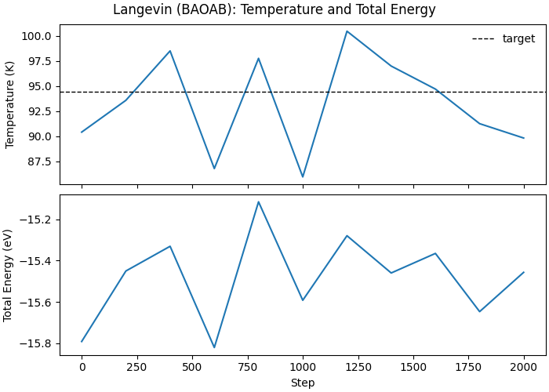

Note
Go to the end to download the full example code.
Langevin Dynamics with Lennard-Jones Potential#
This example demonstrates GPU-accelerated molecular dynamics using the Langevin (BAOAB) thermostat with a Lennard-Jones potential.
We simulate liquid argon at 94.4 K (near the triple point) to demonstrate:
Building an FCC lattice system
Computing neighbor lists with periodic boundaries
Using the Lennard-Jones potential for energy and forces
Running Langevin dynamics in the NVT ensemble
Monitoring thermodynamic properties
Physical System: Liquid Argon#
LJ parameters: ε = 0.0104 eV, σ = 3.40 Å
Temperature: 94.4 K (near triple point)
Density: ~1.4 g/cm³
The BAOAB integrator uses the splitting: B (velocity half-step) → A (position half-step) → O (Ornstein-Uhlenbeck) → A (position half-step) → B (velocity half-step with new forces)
This provides excellent configurational sampling for the NVT ensemble.
Imports#
We import utilities from nvalchemiops for the Lennard-Jones potential, neighbor list construction, and MD integrators.
from __future__ import annotations
import matplotlib.pyplot as plt
import numpy as np
import warp as wp
# Local utilities for this example
from _dynamics_utils import (
DEFAULT_CUTOFF,
DEFAULT_SKIN,
EPSILON_AR,
SIGMA_AR,
MDSystem,
create_fcc_argon,
run_langevin_baoab,
)
from nvalchemiops.dynamics.utils import compute_kinetic_energy
System setup#
print("=" * 95)
print("LANGEVIN DYNAMICS WITH LENNARD-JONES POTENTIAL")
print("=" * 95)
print()
device = "cuda:0" if wp.is_cuda_available() else "cpu"
print(f"Using device: {device}")
# Create FCC argon system (4x4x4 unit cells = 256 atoms)
print("\n--- Creating FCC Argon System ---")
positions, cell = create_fcc_argon(num_unit_cells=4, a=5.26)
print(f"Created {len(positions)} atoms in {cell[0, 0]:.2f} ų box")
print("\n--- Initializing MD System ---")
system = MDSystem(
positions=positions,
cell=cell,
epsilon=EPSILON_AR,
sigma=SIGMA_AR,
cutoff=DEFAULT_CUTOFF,
skin=DEFAULT_SKIN,
device=device,
dtype=np.float64,
)
print("\n--- Setting Initial Temperature ---")
system.initialize_temperature(temperature=94.4, seed=42)
print("\n--- Initial Energy Calculation ---")
wp_energies = system.compute_forces()
pe = float(wp_energies.numpy().sum())
ke_arr = wp.zeros(1, dtype=wp.float64, device=device)
compute_kinetic_energy(
velocities=system.wp_velocities,
masses=system.wp_masses,
kinetic_energy=ke_arr,
device=device,
)
ke = float(ke_arr.numpy()[0])
print(f" Kinetic Energy: {ke:>12.4f} eV")
print(f" Potential Energy: {pe:>12.4f} eV")
print(f" Total Energy: {ke + pe:>12.4f} eV")
print(f" Neighbors: {system.neighbor_manager.total_neighbors()}")
===============================================================================================
LANGEVIN DYNAMICS WITH LENNARD-JONES POTENTIAL
===============================================================================================
Using device: cuda:0
--- Creating FCC Argon System ---
Created 256 atoms in 21.04 ų box
--- Initializing MD System ---
Initialized MD system with 256 atoms
Cell: 21.04 x 21.04 x 21.04 Å
Cutoff: 8.50 Å (+ 0.50 Å skin)
LJ: ε = 0.0104 eV, σ = 3.40 Å
Device: cuda:0, dtype: <class 'numpy.float64'>
Units: x [Å], t [fs], E [eV], m [eV·fs²/Ų] (from amu), v [Å/fs]
--- Setting Initial Temperature ---
Initialized velocities: target=94.4 K, actual=90.4 K
--- Initial Energy Calculation ---
Kinetic Energy: 2.9790 eV
Potential Energy: -21.5623 eV
Total Energy: -18.5833 eV
Neighbors: 9984
Langevin dynamics (BAOAB)#
print("\n--- Equilibration (500 steps) ---")
_eq_stats = run_langevin_baoab(
system=system,
num_steps=500,
dt_fs=1.0,
temperature_K=94.4,
friction_per_fs=0.01,
log_interval=100,
seed=42,
)
print("\n--- Production Run (2000 steps) ---")
prod_stats = run_langevin_baoab(
system=system,
num_steps=2000,
dt_fs=1.0,
temperature_K=94.4,
friction_per_fs=0.01,
log_interval=200,
seed=1000,
)
--- Equilibration (500 steps) ---
Running 500 Langevin steps at T=94.4 K
dt = 1.000 fs, friction = 0.0100 1/fs
===============================================================================================
Step KE (eV) PE (eV) Total (eV) T (K) Neighbors min r (Å) max|F|
===============================================================================================
0 3.8089 -21.5620 -17.7531 115.56 9984 3.712 2.464e-03
100 2.3677 -19.7744 -17.4067 71.83 10224 3.211 2.911e-01
200 2.8758 -19.1837 -16.3078 87.25 10275 3.177 2.974e-01
300 3.2061 -18.9713 -15.7652 97.27 10288 3.217 2.335e-01
400 3.1138 -18.9738 -15.8600 94.47 10307 3.209 2.468e-01
499 2.9896 -18.7750 -15.7854 90.70 10294 3.153 3.250e-01
--- Production Run (2000 steps) ---
Running 2000 Langevin steps at T=94.4 K
dt = 1.000 fs, friction = 0.0100 1/fs
===============================================================================================
Step KE (eV) PE (eV) Total (eV) T (K) Neighbors min r (Å) max|F|
===============================================================================================
0 2.9799 -18.7712 -15.7914 90.40 10293 3.155 3.270e-01
200 3.0845 -18.5344 -15.4499 93.58 10296 3.204 2.917e-01
400 3.2470 -18.5773 -15.3303 98.51 10309 3.177 3.001e-01
600 2.8600 -18.6805 -15.8205 86.77 10310 3.202 2.857e-01
800 3.2226 -18.3375 -15.1150 97.77 10314 3.132 3.371e-01
1000 2.8326 -18.4243 -15.5917 85.94 10318 3.132 3.079e-01
1200 3.3118 -18.5909 -15.2791 100.48 10300 3.197 3.035e-01
1400 3.1972 -18.6567 -15.4595 97.00 10303 3.236 2.671e-01
1600 3.1215 -18.4863 -15.3648 94.70 10318 3.203 2.890e-01
1800 3.0077 -18.6543 -15.6466 91.25 10286 3.143 4.148e-01
1999 2.9604 -18.4169 -15.4565 89.82 10293 3.188 2.695e-01
Analysis#
print("\n--- Analysis ---")
temps = np.array([s.temperature for s in prod_stats])
total_energies = np.array([s.total_energy for s in prod_stats])
steps = np.array([s.step for s in prod_stats])
print(f" Mean Temperature: {temps.mean():.2f} ± {temps.std():.2f} K")
print(" Target Temperature: 94.4 K")
print(f" Temperature Error: {abs(temps.mean() - 94.4) / 94.4 * 100:.2f}%")
print()
print(f" Mean Total Energy: {total_energies.mean():.4f} eV")
print(f" Energy Fluctuation: {total_energies.std():.4f} eV")
--- Analysis ---
Mean Temperature: 93.29 ± 4.63 K
Target Temperature: 94.4 K
Temperature Error: 1.17%
Mean Total Energy: -15.4823 eV
Energy Fluctuation: 0.2054 eV
Plot#
fig, ax = plt.subplots(2, 1, figsize=(7.0, 5.0), sharex=True, constrained_layout=True)
ax[0].plot(steps, temps, lw=1.5)
ax[0].axhline(94.4, color="k", ls="--", lw=1.0, label="target")
ax[0].set_ylabel("Temperature (K)")
ax[0].legend(frameon=False, loc="best")
ax[1].plot(steps, total_energies, lw=1.5)
ax[1].set_xlabel("Step")
ax[1].set_ylabel("Total Energy (eV)")
fig.suptitle("Langevin (BAOAB): Temperature and Total Energy")
print("\n" + "=" * 95)
print("SIMULATION COMPLETE")
print("=" * 95)

===============================================================================================
SIMULATION COMPLETE
===============================================================================================
Total running time of the script: (0 minutes 7.966 seconds)